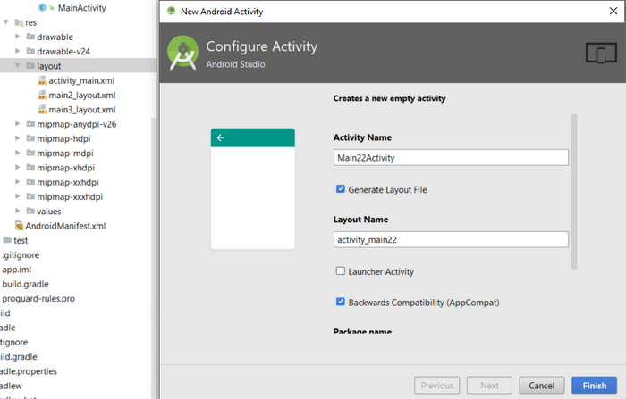
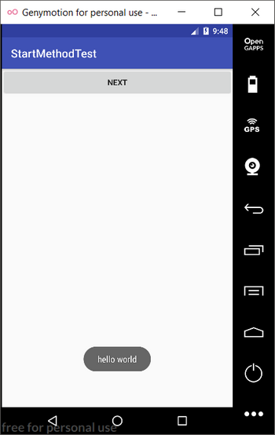
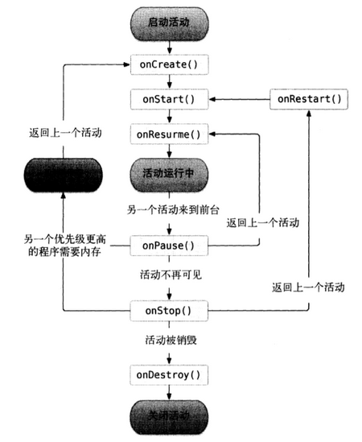

活动
活动是一种包含用户界面的组件，主要用于和用户交互。一个程序中可以包含零个或多个活动。
活动的基本用法
创建活动：
app->src->main->java->package,右键new->Activity->Empty Activity
两个选项：
Generate Layout File：自动创建布局。
Launcher Activity：设置为主活动。
Backwards Compatibility：向下兼容。
创建布局
src New->Directory 新建Layout文件夹（没有的话）
Layout new->layout resource file。
活动注册
在AndroidManifest.xml文件中注册。第一篇已经讲过。
活动中使用Toast
1 | Intent intent = getIntent(); |
Toast可以显示一个短小的信息，然后消失。第一个参数是活动的上下文，使用了当前的类，data1，data2是现实的消息，Toast.LENGTH_SHORT表示短时间显示。

Mean使用
首先在res下新建一个menu文件夹，再在menu文件夹内新建一个Menu resource file，打开文件。添加两个item标签。标签有两个元素一个id，一个title，以上是视图的工作。1
2
3
4
5
6
7
8
9<?xml version="1.0" encoding="utf-8"?>
<menu xmlns:android="http://schemas.android.com/apk/res/android">
<item
android:id="@+id/add_item"
android:title="add"/>
<item
android:id="@+id/remove_item"
android:title="remove"/>
</menu>
然后在活动中使用菜单，需要重写onCreateOptionsMenu()方法。1
2
3
4
5
public boolean onCreateOptionsMenu(Menu menu) {
getMenuInflater().inflate(R.menu.main,menu);
return ture;
}
通过getMenuInflater()方法能获得MenuInflater对象，调用他的inflate就能给当前活动创建菜单。
定义菜单的相应事件，在活动中重写onOptionsItemSelected()方法。1
2
3
4
5
6
7
8
9
10
11
12
13
public boolean onOptionsItemSelected(MenuItem item) {
switch (item.getItemId()) {
case R.id.add_item:
Main2Activity.actionStart(MainActivity.this,"from","Main1");
break;
case R.id.remove_item:
Toast.makeText(MainActivity.this,"nothing", Toast.LENGTH_SHORT);
break;
default:
}
return true;
}
销毁活动
finish()
使用Intent
显示使用Intent
1 | Intent intent = new Intent(MainActivity.this,Main2Activity.class); |
首先构建一个Intent，传入MainActivity作为上下文，Main2Activity作为目标活动。startActivity()启动目标活动。
隐式使用Intent
给Intent传入一个规则，然后让系统分析该启动那个活动。1
2
3Intent intent = new Intent("com.example.startmethodtest.ACTION_START");
inten.addCategory("com.example.startmethodtest.MY_CATEGORY");
startActivity(intent);
这里的Intent里的规则对应了将要启动的应用的action，DEFAULT是默认的category调用startActivity是会自动加入。所以问们可以不写。但是下面的第二个category我们需要加入到代码里。1
2
3
4
5
6
7
8<activity android:name=".Main2Activity"
android:launchMode="singleInstance">
<intent-filter>
<action android:name="com.example.startmethodtest.ACTION_START" />
<category android:name="android.intent.category.DEFAULT" />
<category android:name="com.example.startmethodtest.MY_CATEGORY" />
</intent-filter>
</activity>
使用Intent传递消息
略1
2
返回消息给上一个活动
startActivityForResult()方法，该方法有两个参数。一个intent，第二个请求码，用于后面判断返回数据来源。
活动发起方1
2
3
4
5
6
7
8
9
10
11
12
13
14
15
16
17
18
19//发送Intent
String data = "data from get BACKMESSAGE";
Intent intent = new Intent(FirstActivity.this,SecondActivity.class);
intent.putExtra("extra_data",data);
startActivityForResult(intent,1);
//接收消息
protected void onActivityResult(int requestCode, int resultCode, Intent data) {
switch (requestCode) {
case 1:
if (resultCode == RESULT_OK) {
String returnedData = data.getStringExtra("data_return");
Log.d("FirstActivity",returnedData);
}
break;
default:
}
}
活动相应方,setResult()第一个参数向发起响应的活动返回数据。
setResult()接收两个参数，第一个一般是RESULT_OK,RESULT_CANCELED,用于向上一个活动返回处理结果,第二个参数用于返回数据。1
2
3
4Intent intent = new Intent();
intent.putExtra("data_return", "Hello FirstActivity");
setResult(RESULT_OK, intent);//用于向上一个活动返回数据
finish();
活动生命周期
返回栈
Android中的活动是层叠的，我们当下调用的活动就会覆盖在上一个活动，然后点击back会销毁最上面的活动，也就是当前的活动。下面一个活动就会重新显现。大概像下面这样。
|———-| -》——》|———-|
|activity1 | -》——-》 |activity2 |
|activity2 | -》-back- 》 |activity3 |
|activity3 | -》——-》 |activity4 |
|················· | -》——-》 |················· |
活动状态
活动有四种状态：
1、运行状态:活动位于栈顶。
2、暂停状态:活动可见，但不位于栈顶。（弹窗）
3、停止状态:不处于栈顶且不可见。
4、销毁状态:不在返回栈。
活动的生存期
Activity中有七个回调方法，覆盖了活动生命周期的每一个环节。
1、onCreate():活动第一次创建时调用，活动的初始化，如加载布局(setContentView)，绑定事件。
2、onStart():活动从不可见到可见。
3、onResume():活动准备与用户交互时使用，活动此时位于栈顶。
4、onPause():系统准备去启动或者恢复另一个活动时调用。
5、onStop():在当前活动不可见是时用，新活动是对话框onPause调用，而onStop不调用。是界面的话都调用。
6、onDestory():销毁活动。
7、onRestart():活动停止到运行时调用。重新启动活动。
活动可以分为三种生命周期：
完整生命周期(onCreate-onDestory)
可见生命周期(onStart-onStop)：对用户可见的。
前台生命周期(onResume-onPause)：运行状态的活动，与用户进行交互的。

活动的启动模式（默认：一个应用一个返回栈）
1 | <activity android:name=".Main2Activity" |
android:launchMode=”StartMethod”
standard：任何情况下每次都新建一个活动的实例。（活动默认是standard）
singleTop：当处于非栈顶的情况下新建实例。
SingleTask：首先检查返回栈中是否存在实例，不存在创建，存在实例将该实例以上的所有活动出栈(onDestory)，这样该活动到栈顶。
singleinstance：为该活动单独新建一个返回栈，用于应用间共享活动。例如有三个活动1、2、3，活动2是singleTask启动模式，1、3默认启动模式，可用从1跳转到2再跳转到3。那么1和3的taskId应该是一样的，而2的TaskId不一样。